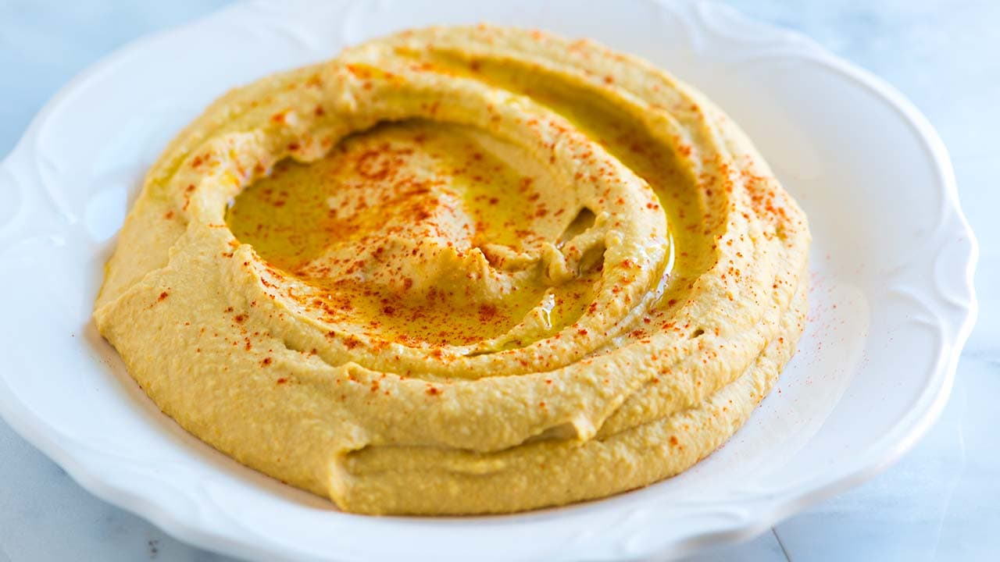
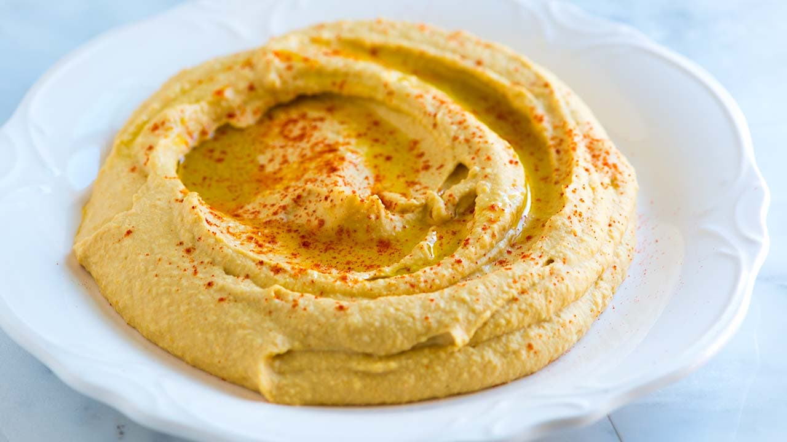
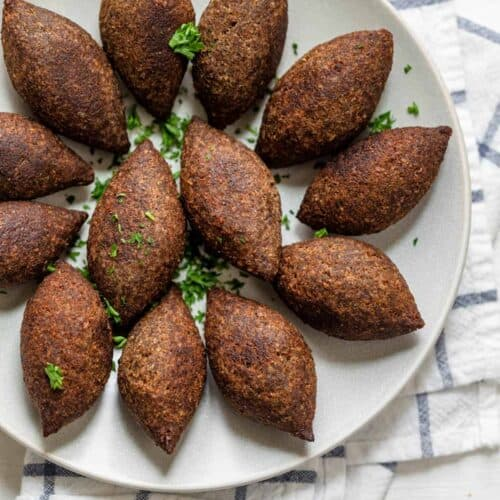

Hummus
A staple in Lebanese cuisine, hummus is a creamy dip made from chickpeas, tahini, lemon juice, and garlic. It is often served as part of a mezze, a collection of small dishes, and enjoyed with warm pita bread.
Lebanese cuisine is famous for its fresh ingredients, bold flavors, and a variety of dishes that appeal to all palates. Known for its balance of herbs, spices, and fresh produce, Lebanese food includes a delightful mix of vegetables, grains, meats, and olive oil, making it both healthy and flavorful.
A staple in Lebanese cuisine, hummus is a creamy dip made from chickpeas, tahini, lemon juice, and garlic. It is often served as part of a mezze, a collection of small dishes, and enjoyed with warm pita bread.
Tabbouleh is a refreshing salad made from parsley, bulgur wheat, tomatoes, mint, onions, and lemon juice. It’s light, healthy, and packed with flavors, often enjoyed as part of a mezze platter.

Considered the national dish of Lebanon, kibbeh is made from spiced ground meat (often lamb or beef) mixed with bulgur wheat. It is prepared in various ways, such as fried, baked, or served raw (kibbeh nayyeh).
A popular dessert, baklava is made from layers of filo pastry filled with chopped nuts and sweetened with syrup or honey. It is a treat enjoyed not only in Lebanon but throughout the Middle East.

In Lebanon, meals are more than just food; they are social gatherings that bring family and friends together. A typical Lebanese meal is served in multiple courses, often beginning with a mezze spread, followed by grilled meats, salads, and ending with desserts and coffee.